You are here: Minimo project page > Minimo on the iPAQ
Minimo on the iPAQ
Here are some screenshots of Minimo in action, running under Familiar Linux on an iPAQ 3950 and 5555 handhelds. To view how any page might look in Minimo CSS Small Device mode from your desktop browser download and install this .xpi
| Minimo using "CSS for Small Devices" mode. Details for this are posted in bug 225629 |
Minimo in "Standard Layout" mode. | Comments |
|---|---|---|
| 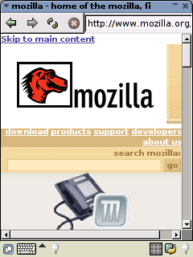 | 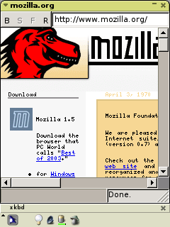 | The style sheet for small
devices allows improved control of fonts sizing, image sizing, and
"stacking" of the content to reduce or eliminate cumbersome vertical
and horizontal scrolling. Site related search boxes in the first screen full of information make the navigation of large sites much easier. |
| 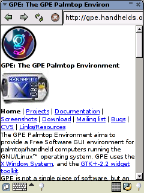 | 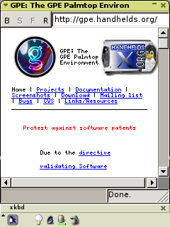 | The GPE site demonstrates the
improved amount and clarity of information that can be displayed on a
single screen full of information using the style sheet for small
devices |
| 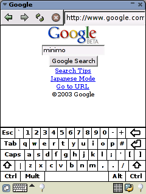 | 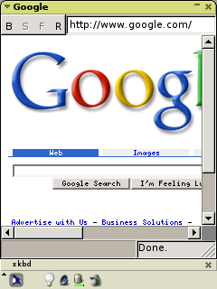 | This example shows a combination
of both the style sheet for small devices, and a special page designed
by google for searching on palmtop devices. On sites where form entry requires typing input reserving space for the soft keyboard makes the page easier to use. On the left the keyboard has been popped up and some search terms have been entered. On the right, the page would need to be scrolled before popping the keyboard and entering text. |
| 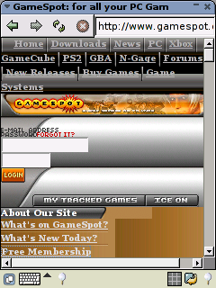 | 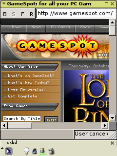 | The complicated gamespot.com site has mixed results. One benefit of the style sheet is that it would get a gamespot users to the login form fields without having to scroll vertically and horizontally to find the login. |
| 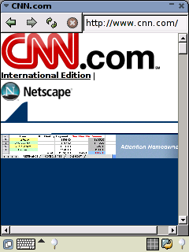 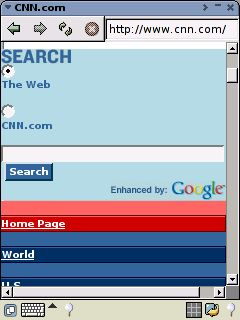 |
 |
The CNN homepage also shows
faster navigation of the page with the small device CSS layout, but
slightly less attractive on initial display. A few minor tweeks
to the page could make it much easier to navigate on small devices. |
| 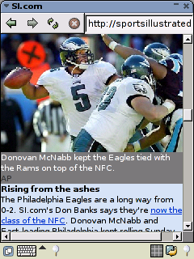 | 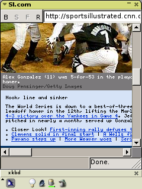 | Sports illustrated demonstrates
that images and graphics can be combined to produce a high quality user
expieriance even under the constraints of small display size. |
| 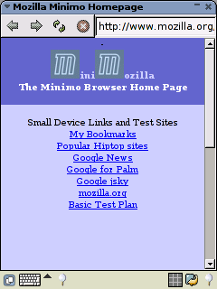 | The new minmo start page offers quick access to content designed for small devices, without having to open the keyboard and type in destination sites. | |
| 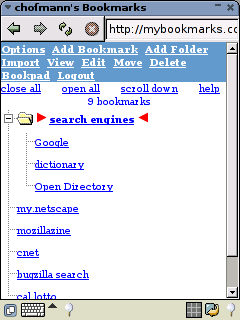 | Sites like http://mybookmarks.com offer the ability to support all bookmark functionality on the server side. This would reduce code on the client, and provide location independence to share bookmarks across palmtop, laptop, and desktop systems. Bookmarks can be updated and maintained from either the palmtop or desktop. In the case of mybookmarks.com a new window is launched when clicking on a bookmark; so the user returns to the bookmark page after visiting and dismissing the favorite page window. The user can also pop the bookmark window to the top to select another bookmark if needed. | |
| 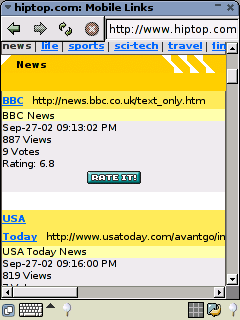 | The Danger Hiptop site
offers easy and quick navigation to a variety of content designed
for small devices. The site also provides a rating system
for users to share information and bubble the best sites for different
categories to the top of the list, creating a good feedback loop for
both palmtop users and site designers. In this case the BBC News
and USA Today are listed as the most popular and easiest to navigate
news sites for small devices. |
|
| 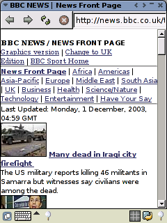 | The BBC site provides fast access to a wide variety of news content in small summaries that are easy to drill down on thought the hyperlinks, and combines some graphics | |
| 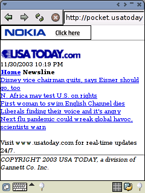 | The USA Today site also provides a clean layout for easy and quick navigation. | |
| 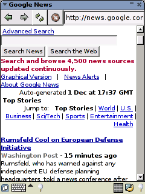 | And this screenshot of Google News shows the real power of a browser for small devices. Connection to 4500 constantly updated news sources anywhere within an earshot of a wireless connection. |